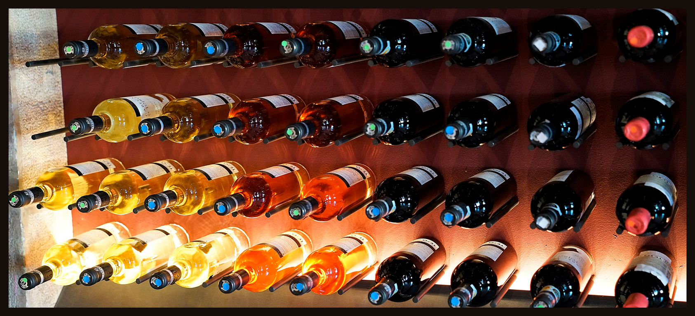

<section class="history-wines">
    <div class="history-wines__inner">
        <div class="hisoty-wines__header">
            
        </div>
        <div class="history-wines__content">
            <div class="history-wines__collection">
                <div class="history-wines__collection__grid">
                    <div class="wines__collection__grid__first ">
                        <p class="c__grid__first__text"><em>1796</em></p>
                        <p class="c__grid__first__heading">The Beginnig</p>
                        <div class="c__grid__divider">

                        </div>
                        <p class="c__grid__first__text__body">Our family has been engaged in winemaking since the 18th century when the first grape bushes were planted in the Napa Valley by our ancestors.</p>
                    </div>
                    <div class="wines__collection__grid__second">
                        <p class="c__grid__second__text"><em>1912</em></p>
                        <p class="c__grid__second__heading">Selling Wines</p>
                        <div class="c__grid__divider">

                        </div>
                        <p class="c__grid__second__text__body">Our home-based winery in California became a small, family-owned business, that supplied wine for connoisseurs of this amazing drink.</p>
                    </div>
                    <div class="wines__collection__grid__third">
                        <p class="c__grid__third__text"><em>1946</em></p>
                        <p class="c__grid__third__heading">Restart of Production</p>
                        <div class="c__grid__divider">

                        </div>
                        <p class="c__grid__third__text__body">After the Second World War, we adopted the experience of European winemakers and began to use new technologies in our wine-making processes.</p>
                    </div>
                    <div class="wines__collection__grid__fourth">
                        <p class="c__grid__fourth__text"><em>2010</em></p>
                        <p class="c__grid__fourth__heading">Worldwide Shipping</p>
                        <div class="c__grid__divider">

                        </div>
                        <p class="c__grid__fourth__text__body">We used to sell our wines only wine only in California. But since 2010, we have been shipping our bottles to other American states and even other countries.</p>
                    </div>
                </div>
            </div>
        </div>
    </div>
</section>